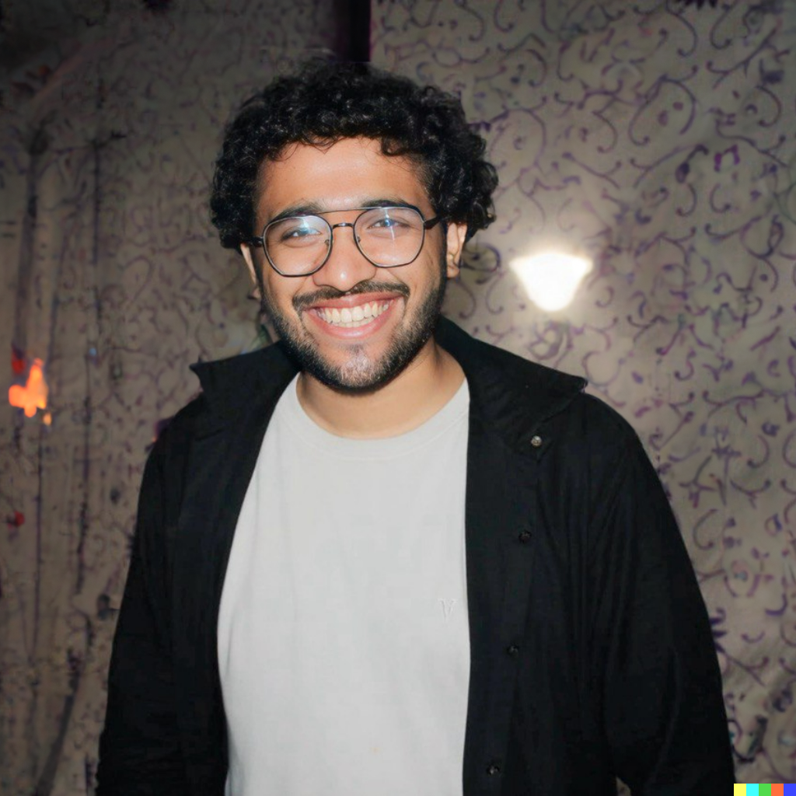

AI Researcher in NLP, Model Interpretability, LLM Efficiency and Retrieval
I am Siddhant Gupta, a third-year undergraduate student pursuing Industrial Engineering at the Indian Institute of Technology (IIT), Roorkee. My research interests focus on the Natural Language Processing, Model Interpretability, Multimodality, LLM Efficiency and Retrieval .
I am a regular contributor at the Cohere for AI (C4AI) community, where I regularly engage in discussions on recent research and developments in NLP, Multi-Agentic AI systems, Contextual learning, Synthetic data generation and Mechanistic Interpretability. I also lead teams in multiple AI hackathons as part of my role in my university’s ArIES (Artificial Intelligence and Electronic Society) club, guiding them toward achieving CV and NLP alignment. I am also involved with the Computational Intelligence and Operations Laboratory (CIOL), where my work centers on fine-tuning models across multiple modalities and providing solutions for multilingual text-based challenges.